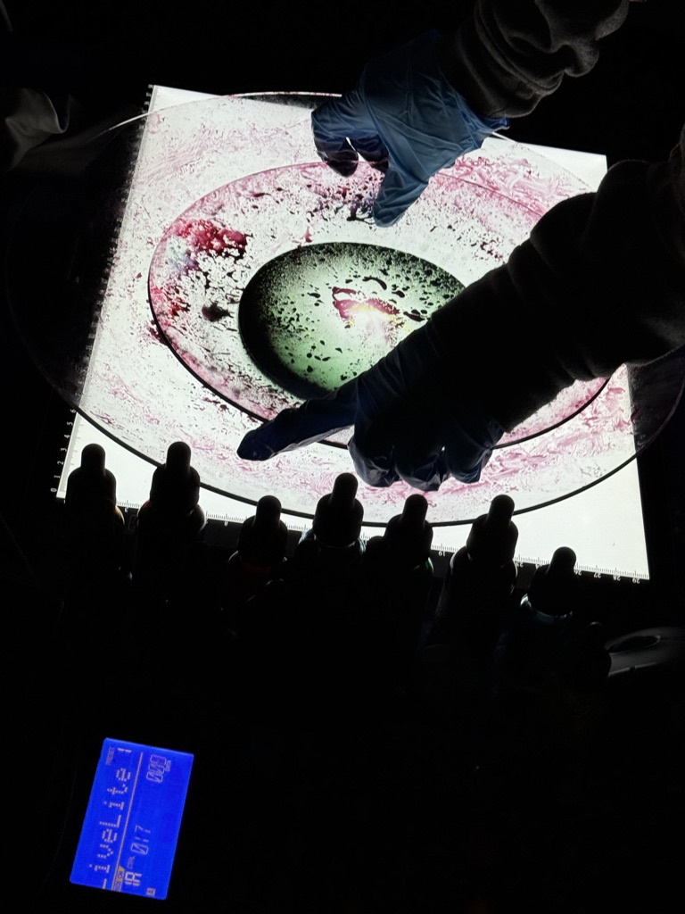
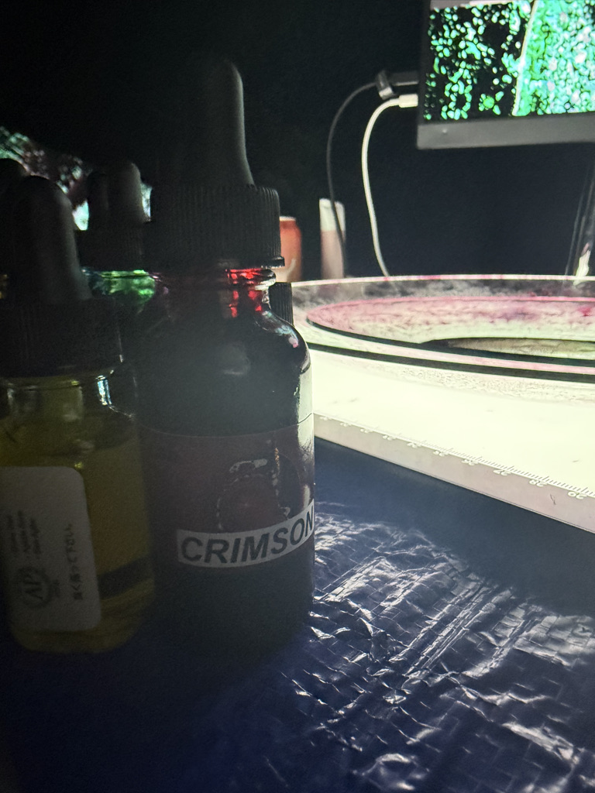
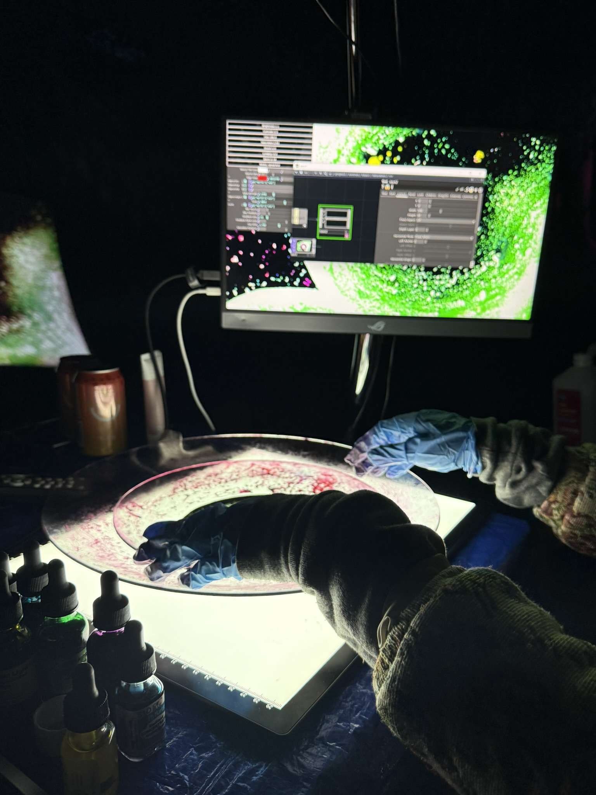
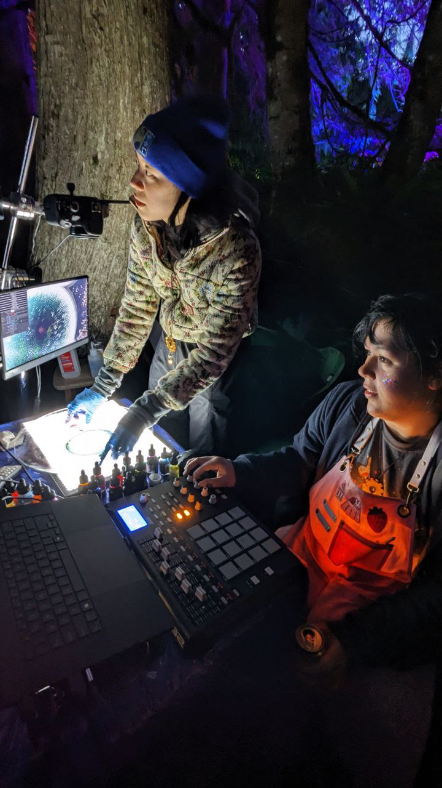

EPHEMERAL CURRENTS
Ephemeral Currents is a participatory installation that merges an analog liquid light show with digital interaction. It's co-creators Diana Xie and Nicholas Bowen use layered glass, oil dyes, and watercolor generate shifting fields of color and flow, animated by both the artists and audience.
Participants engage through two modalities: a MIDI interface that remixes real-time effects, and a motion sensor that translates gesture into ripples and distortions across the water, evoking the uncanny sensation of touching liquid without contact.
The installation is a reflection on how digital tools can serve as conduits for co-creation and embodied connection. Physical gestures impact the natural world, yet only by passing through the digital interface. Unlike the virtual isolation of many digital interactions, this system invites us to reimagine technology not as a force of separation but as a means of deepening our connection to organic forms.
At once playful and contemplative, Ephemeral Currents allows us to channel presence and attention into collective art-making, and thus reworking our connection to the digital and natural.
In Practice: The Electric Sky Exhibition
Where digital touch met organic light.
At the Electric Sky Art Camp, amidst the energy and creativity, "Ephemeral Currents" came to life. The installation was a glowing beacon, drawing people in with its swirling, organic patterns projected in a mesmerizing dance of color and light. At its heart was an overhead projector, where we, the artists, manually guided constellations of oil, watercolor, and dye between glass plates—a truly analog foundation for a digital experience.
During the camp's "Movin' It" theme year, Ephemeral Currents demonstrates kinetic art in a more subtle register than the robots and motorized sculptures you'll find elsewhere on site. The motion here is fluid, organic, driven by whoever happens to be standing nearby. People often end up collaborating without planning to, one person's MIDI adjustments layering with another's gestural input.
Electric Sky has always been about experimentation and cross-disciplinary work. Ephemeral Currents fits that mission by offering a hands-on way to explore the relationship between digital tools and physical materials, wrapped in something that's simply fun to play with.
Visitors were invited not just to watch, but to become part of the art. The first point of interaction was often the most surprising: a motion sensor that translated their physical gestures into visible effects. A simple wave of a hand sent ripples and distortions across the projection. It created an uncanny sensation of directly "touching" the liquid forms without ever breaking the surface. This was where the digital became a conduit, extending the body into the artwork and forging an intimacy between code, light, and organic matter.
Once drawn in, participants discovered the MIDI controller at our table. Here, they could take a more direct role, becoming live VJs for the installation. With each knob turned and button pressed, they manipulated a suite of real-time effects built in TouchDesigner, layering digital precision onto the unpredictable flow of the liquids. The experience became a playful, social act of co-creation.
"Ephemeral Currents" became a meditative space for play and reflection. It asked a simple question: what happens when our digital interactions aren't confined to a screen, but instead ripple through the physical world? The result was a shared, ephemeral artwork. A testament to how technology can bring us closer to the organic, revealing new ways for human, machine, and matter to create together.